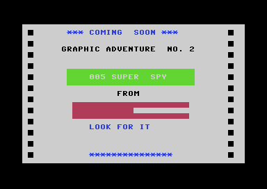

<meta charset="utf-8">
<meta name="viewport" content="width=device-width, initial-scale=1">
<title>{{title}}</title>
<link rel="preconnect" href="https://fonts.googleapis.com">
<link rel="stylesheet" href="https://fonts.googleapis.com/css2?family=Lato:wght@400;700;900&family=IBM+Plex+Mono:wght@400;500&display=swap">
<link rel="stylesheet" href="reference/bastow-page.css">
<!-- tabs -->
<header class="hero">
  <p class="eyebrow">{{platform}} · {{year}} · {{publisher}}</p>
  <h1>{{title}}</h1>
  <p class="sub">What the program does that its screens never say, found by reading its BASIC lines and trying each one in the emulator.</p>
</header>
<main class="wrap">
<section id="list">
  <h2 class="t">The program cannot be listed</h2>
  <p>Line 17 pokes the value 168 into address 775 (<code>$0307</code>), the high byte of the vector BASIC’s <code>LIST</code> command goes through. The ROM’s own value is <code>$A7</code>, so the command now jumps to <code>$A81A</code> instead of <code>$A71A</code>. A <code>LIST</code> of the program in memory then prints nothing but the line number. In the emulator, <code>LIST 5</code> printed <code>5</code> and nothing else, and with the byte put back by hand line 5 listed whole. <code>RUN</code> and every other command are untouched, and the program in memory is complete. This tab’s <a href="source.html">Source code</a> is read from that memory.</p>
</section>

<section id="combination">
  <h2 class="t">A combination nobody wrote down</h2>
  <p>The chest’s code is <code>IBDF</code>. The program never holds it as a string. The letter <code>I</code> is loaded by line 660, the top of the <code>pull</code> verb, whether or not the pull works. <code>F</code> is loaded by line 600, the top of <code>light</code>. <code>D</code> and <code>B</code> are set while the title is drawn, at lines 5000 and 5070 from two numbers set at lines 13 and 4922. Line 140 joins <code>B</code> and <code>D</code> the first time a move is made in the open with the dogs about, and the <code>throw</code> verb at line 830 joins <code>I</code>, that pair and <code>F</code> into <code>Z2$</code>. The lock at line 1745 compares the typed line with <code>Z2$</code>.</p>
  <p>The book in the library gives only the turns, right 3, left 7 and right 2, and the note in the small box says <code>VI</code>. Counting from the sixth letter, <code>F</code>, three to the right is <code>I</code>, seven to the left of <code>I</code> is <code>B</code>, and two to the right of <code>B</code> is <code>D</code>; the path ends at the starting letter. Typing <code>IBDF</code> at the lock opened the chest in the emulator.</p>
  <p>A consequence follows from the build order. The save routine keeps <code>A5$</code>, <code>A1$</code> and <code>Z2$</code> but not <code>B</code>, <code>D</code> or their pair. The disk’s <code>BM-2</code> save, made in the cell at move 283, holds <code>Z2$</code> as <code>IF</code>, because the pair had not been built when the last throw was typed.</p>
</section>

<section id="nogold">
  <h2 class="t">You can win without the gold</h2>
  <p>The way out, west from the gravel path, tests only that the chest’s combination was entered (<code>H8</code>=1, line 331), not that the gold is in the pack. The game then prints “thats it you’ve got the gold” and “….and your life!” as it ends. In the emulator the winning screen came up with the gold left in the chest.</p>
</section>

<section id="dead">
  <h2 class="t">Code that is never reached</h2>
  <p>Two blocks are never run. A tune player at lines 1570 to 1573 takes notes in the title tune’s format on voice 2, and nothing jumps to it. Line 4700 is a bare <code>GOTO 60</code> that no line reaches. And the title tune’s fifteenth note is read but never sounded, because the routine counts its notes before the test (<a href="music.html#details">details</a>).</p>
</section>

<section id="advert">
  <h2 class="t">An advertisement behind a switch</h2>
  <p>West of the damp stone corridor is a dark room with a single switch and no puzzle that needs it. Pulling the switch runs a screen advertising “Graphic adventure no. 2: 005 Super Spy”, with “look for it”. The switch is drawn pulled or not by the flag <code>G5</code>.</p>
  <figure class="overview-shot"><figcaption>The screen the switch shows (line 1940, <code>coming_soon_screen</code>).</figcaption></figure>
</section>

<section id="words">
  <h2 class="t">Small things in the words</h2>
  <p>Looking at the apple, once looking at the case in the shed has turned it up, prints “looks like a iie”, a joke on the Apple IIe. Trying the trapdoor with the ladder in the pack prints “sorry,something w1ll not fit”, with a digit one in place of the second <code>l</code>. An empty pack, when you ask for it with <code>i</code>, says “not a cracker !”. The special commands screen calls <code>quit</code> “stops hair pulling”.</p>
</section>

<section id="saves">
  <h2 class="t">Two saved games on the disk</h2>
  <p>The cracker’s disk carries two files that are not programs but games saved by the game’s own <code>save</code>: <code>BM-1</code>, the very start, and <code>BM-2</code>, a game with the gate opened, the hole made, the robot out and the gold already in the pack. Their first two bytes happen to look like a load address, which is why the directory lists them as program files. Nothing on the disk loads either one.</p>
</section>
</main>
<footer style="margin:16px 0 0;padding:22px var(--gx) 0;border-top:1px solid #e0ded8;font-family:'IBM Plex Mono',ui-monospace,Menlo,monospace;font-size:12px;color:#80838a"><a href="https://github.com/gamesexplained/gamesexplained" style="color:#1f5fa8;text-decoration:none">GitHub</a> · <a href="https://discord.gg/3V9GWyRDWV" style="color:#1f5fa8;text-decoration:none">Discord</a><br>© Games Explained contributors. Write-ups, facts and symbol maps are available under <a href="https://creativecommons.org/licenses/by-sa/4.0/" style="color:#1f5fa8;text-decoration:none">CC BY-SA 4.0</a>; code under <a href="https://opensource.org/licenses/MIT" style="color:#1f5fa8;text-decoration:none">MIT</a></footer>
